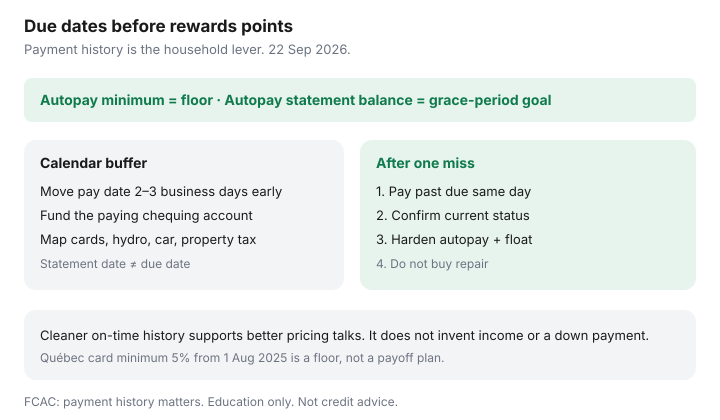

Personal Finance · Canada
On-Time Payment Habits That Protect Canadian Credit Scores (and Interest Rates)
Canadian credit scores are proprietary, but the household lever that shows up first in every FCAC explainer is still payment history: did the account stay current. Busy middle-aged households miss a Visa due date because property tax, hydro, and two payrolls landed in the same week — then pay for years in higher card, car, and mortgage pricing. This page is an on-time system: autopay design, calendar buffers, damage control after one miss, and how cleaner history flows into loan pricing. Facts oriented to FCAC guidance used 22 Sep 2026. Education only — not a score promise.
If the file is thin, start with thin-file habits without gimmicks. If balances are the problem, pair this page with utilization and payoff order.
Disclosure: Education only. Not credit, lending, or insolvency advice. Banking and tax-software products are offer types; Saving Optimizer may later add partner links and does not currently claim partnerships. No credit-repair, payday, or debt-settlement offers. Scores are proprietary; on-time habits are not a guaranteed rate cut.
Key takeaways
- Payment history is the lever households control most directly. One 30-day late can follow you for years under provincial rules.
- Autopay the minimum as a floor. Autopay the statement balance when cashflow is stable. Never autopay a fixed dollar that can fall below the rising minimum.
- Build a two-to-three business-day buffer before every due date so weekends and statutory holidays do not create an NSF and a late mark together.
- After one miss: pay past due immediately, confirm the next cycle posts current, then harden the system — do not buy repair.
- Cleaner files support better pricing on revolving and instalment credit. They do not replace income, down payment, or debt-service ratios.
Why payment history dominates Canadian scores
FCAC describes scores as a picture built from how you have used credit, with payment history and amounts owed among the factors a household can see and work on. Models are not public formulas. What is public enough for planning: accounts reported as late, in collections, or written off weigh heavily, and accurate negatives remain for the period provincial law allows — often on the order of six or seven years depending on the item and the province. A thin file with one late mark looks worse than a thick file with the same late mark. That is why newcomers and cash-only adults feel every slip.
Utilities and rent usually do not polish a score when paid on time. They damage a file when they become collections. Credit cards, lines of credit, instalment loans, and some telecom accounts are the trade lines that teach the model you pay as agreed. Your own free Equifax or TransUnion request does not change the score; a lender’s hard inquiry can.

Autopay minimum vs autopay statement balance
Two different jobs share one button:
- Autopay minimum — stops the late mark if you forget. Interest can still accrue on the unpaid principal. Québec’s credit-card minimum of at least 5% of the balance, in force 1 August 2025, is a floor, not a payoff plan.
- Autopay statement balance — preserves the grace period when you were otherwise paying in full. Best when payroll lands before the due date every month.
A common household design: autopay minimum on every revolving account from a chequing account that holds a bill float, plus a same-day or next-payday transfer that clears the rest on the highest-APR card first. Do not set a fixed $200 autopay on a card whose minimum can rise above $200 after a big spend — the fixed amount can fail the issuer’s minimum test and still report late. Recalculate after any balance jump.
Fund the chequing account that pays the cards. Autopay from an empty account creates NSF fees and a missed payment in the same week. The NSF and overdraft guide covers the $10 NSF cap that applies from 12 March 2026 on personal deposit accounts at federally regulated banks — helpful, not a reason to run hot.
Calendar buffers for utilities and cards
Map every due date onto one household calendar: cards, line of credit, car, mortgage, property tax instalments, hydro, telecom, insurance PADs. Move the autopay date two or three business days earlier than the due date so a weekend, a statutory holiday, or a slow PAD does not cross the line. Align the float with payroll: if pay lands Thursday, do not schedule five PADs for Wednesday.
| Bill | Due date on statement | Schedule payment |
|---|---|---|
| Visa | 22nd | 19th (or prior business day) |
| Hydro PAD | 1st | Confirm PAD date; keep float posted two days earlier |
| Car loan | 15th | 13th if you pay manually; verify PAD posting |
| Property tax instalment | Municipal date | Transfer to tax account one week early |
One shared calendar beats three apps nobody opens. Put the statement date next to the due date — statement date is when utilization often reports; due date is when late marks decide themselves.
One missed payment: damage control steps
- Same day. Pay the past-due amount and any fees you can clear. Bring the account to current status.
- Confirm posting. Check the app in two business days. Screenshot the current status.
- Optional goodwill call. If this is a rare miss on a long clean account, ask whether a late fee can be waived. Do not expect the bureau late mark to vanish because you called. Get any promise in writing.
- Harden the system. Turn on autopay minimum, add the calendar buffer, and move a larger float into the paying account.
- Do not buy repair. Accurate late information stays until the legal clock runs out. Dispute only if the late mark is factually wrong — free at both bureaus via the free-report path.
If the miss happened because the balance is unpayable, the emergency is cashflow, not the score. A non-profit credit counselling society in your province is the conversation. A company that wants fees to settle debt before you see the math is not.
How better scores flow into loan pricing
Card issuers, auto lenders, and mortgage lenders price risk with the file they pull and with income and existing debt. On-time history will not invent a down payment. It can decide whether you see the better tier of a lender’s range, whether a limit increase is soft or hard, and whether a refinance conversation starts. Chronic 30- and 60-day lates make those conversations shorter. Insurance markets in some provinces may also use credit information where rules allow — that is a provincial insurance question, not a reason to buy a monitoring subscription.
Before a mortgage or car loan, pull both free disclosures in the same month. Fix errors first. Keep new hard inquiries quiet in the shopping window your bureau actually groups. Then shop rates with a payment history you can defend.
A household on-time payment system
- List every credit and essential PAD with due date, statement date, amount, and paying account.
- Fund a bill float equal to one cycle of fixed PADs plus card minimums.
- Autopay minimums on all revolving accounts; clear statement balances on purpose.
- Set calendar alerts three business days before each due date.
- Review the list on the first Sunday of each month — new cards, new PADs, changed due dates.
- Twice a year, pull one free bureau disclosure, then the other about six months later (FCAC’s cadence), and both before any large application.
Sources & date stamps
- FCAC, credit reports and scores — payment history and credit use as household-visible factors; free report access (used 22 Sep 2026).
- FCAC / bureau materials on accurate negatives remaining for provincial periods; free disputes (orientation used 22 Sep 2026).
- Québec credit-card minimum of 5% from 1 August 2025, as used on existing payoff guides.
- Federally regulated bank NSF fee cap of $10 from 12 March 2026 — see NSF guide (used 22 Sep 2026).
Frequently asked questions
Does one missed payment ruin a Canadian credit score?
One 30-day late can hurt, especially on a thin file, but it is not permanent theatre. Bring the account current, confirm the next statement shows paid as agreed, and keep the next twelve months perfect. Accurate late marks stay for the provincial period; a repair firm cannot erase them early.
Should I autopay the minimum or the statement balance?
Autopay at least the minimum so the account cannot go late if you forget. Autopay the statement balance when cashflow allows, so revolving interest never starts. A hybrid works: autopay minimum, plus a calendar reminder to clear the rest before the due date.
Do utilities affect my credit score?
Usually only when an unpaid bill goes to collections or a telecom account reports negatively. On-time hydro still matters for cashflow and for avoiding a collection. Put utilities on the same calendar buffer as cards.
How do better scores affect loan rates?
Lenders price risk using the file they pull. Payment history is a dominant factor FCAC points households toward. A cleaner on-time record does not guarantee a posted rate, but chronic late marks make approvals and pricing harder for cards, cars, lines, and mortgages.
What is the first step after a missed due date?
Pay the past-due amount the same day if you can. Call the issuer only if you need a hardship arrangement — get any goodwill promise in writing. Then rebuild the autopay and buffer so the next cycle cannot miss.